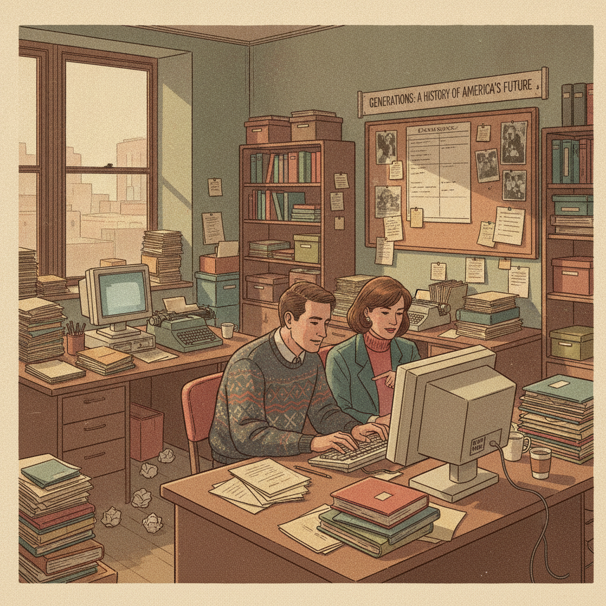

A Monday stand-up at a 40-person logistics company seats four people around the same table who were born fifty years apart. The operations director, 63, wants the update in a five-minute verbal summary the way she’s always run the room. The plant manager, 46, already read the numbers in the shared doc before walking in and just wants to know what’s actually blocking Thursday’s shipment. The marketing lead, 31, is the only one who asked, out loud, whether last week’s missed deadline was actually anyone’s fault or just a broken process. And the newest hire, 23, three weeks in, has already asked HR twice whether the company tracks burnout, a question nobody else at that table has ever thought to ask out loud.
Nobody in that room is wrong about what a good meeting looks like. Each of them was taught, by four very different decades, what work is supposed to demand of a person and what it owes back. That’s the actual mechanism behind most of what gets waved off as “generational conflict” at work: not a values gap invented by trend pieces, but four different sets of formative circumstances producing four coherent, defensible answers to the same question. This piece is a textbook-depth look at where each generation’s instincts actually came from: the real historical events, the values that followed from them, and how those values show up as specific, recognizable behavior in a workplace today.
What This Lens Is, and When to Use It
Generational-cohort analysis is the practice of reading a group’s shared attitudes and behaviors as a product of the historical conditions they came of age in, not as an inherited trait or a fixed personality type. The underlying claim is straightforward: people absorb a disproportionate amount of their worldview during adolescence and early adulthood, so a cohort that lived through the same recession, the same war, the same technological shift, or the same absence of adult supervision at the same age tends to carry a recognizably similar set of defaults into adulthood, even if they never meet each other.2
Used well, this lens explains patterns: why flexibility reads as table stakes to one generation and a perk to another, why one cohort treats a job title as identity and another treats it as a transaction, why “we’ve always done it this way” lands as reassurance for one group and a red flag for another. Used badly, it becomes a way to stereotype an individual off a cohort average, which the underlying research itself warns against. Pew Research Center, whose birth-year boundaries are the closest thing this piece has to a standard, states plainly that generational cutoff points “aren’t an exact science” and that “the differences within generations can be just as great as the differences across generations.”1 Treat everything that follows as a set of broad, well-evidenced patterns, useful for understanding a workplace in aggregate, not a verdict on the specific person sitting across from you.

Treating a birth cohort as a unit of analysis isn’t a marketing invention. The idea traces to the German sociologist Karl Mannheim, whose 1928 essay “Das Problem der Generationen” (“The Problem of Generations”) argued that a generation isn’t just people born in the same years, it’s people who lived through the same formative historical events at the same vulnerable age, which welds them into a group with a shared way of interpreting the world even if most of them never meet. Mannheim’s essay is still widely credited as the founding theoretical treatment of generations as a sociological phenomenon, decades before anyone used the word “Millennial.”2
The specific vocabulary in daily use today, including the word “Millennial” itself, has a much more recent and much more concrete origin: William Strauss and Neil Howe’s 1991 book Generations: The History of America’s Future, 1584-2069. Howe has said in interviews that he and Strauss picked the name because the oldest members of that cohort would graduate high school in the year 2000, and because they were watching children being raised with far more structure and protection than Generation X or the Baby Boomers had been. “When we saw Millennials as kids being raised so differently, we could already make an easy prediction,” Howe said, and the pair forecast that crime rates would fall, families would grow closer, and young adults would become more risk-averse. All three predictions had materialized by 2000.3
That track record is worth stating honestly alongside its limits.
Strauss and Howe’s larger theory, a cyclical model claiming American history moves through recurring 80-to-100-year generational cycles, drew sharp pushback from professional historians when the book came out. The New York Times called it “too contrived to be taken seriously” as history; Newsweek described it as “an elaborate historical horoscope that will never withstand scholarly scrutiny” and noted that “generational boundaries are plainly arbitrary.”4 The honest read: generational analysis is a genuinely useful lens with real predictive hits on record, not an uncontested science, which is exactly why the caveat in the previous section matters as much as the framework itself.
The Four Generations, in Full
Only one of the boundaries below is official. The U.S. Census Bureau recognizes the Baby Boom, the surge in births following World War II, as a defined demographic event; every boundary after it is analytical convention, not government designation, and researchers openly disagree by a year or two at each edge.1 One cohort deliberately isn’t getting its own section here: the Silent Generation, born roughly 1928 to 1945, came of age during the Depression and World War II, absorbed an even deeper institutional trust and hierarchy-respecting instinct than the Boomers who followed them, and is largely retired from day-to-day work today. They still show up in a workplace, though, as a founder, a family-business patriarch or matriarch, or a board member whose instincts about how a company should run were set closer to 1945 than to 1985. Worth knowing they’re there. Not worth a full deep-dive on a generation that’s mostly left the building.
Four generations are actually doing the work right now, and for the first time in decades, all four are simultaneously active in the same workforce at scale.
Baby Boomers (1946-1964)
Boomers came of age inside a run of history that swung between abundance and upheaval inside the same two decades. Postwar economic growth meant more of them grew up with a rising standard of living than any American generation before them, at the same time the Civil Rights Movement, the Vietnam War and its draft, the assassinations of John F. Kennedy, Robert Kennedy, and Martin Luther King Jr., the Apollo 11 moon landing, and eventually Watergate were reshaping how much they trusted institutions and how much they believed one person’s effort could actually move something.5
The values that came out of that combination are fairly legible: a strong, sometimes identity-defining work ethic, loyalty to an employer earned through tenure, competitiveness, a comfort with hierarchy and clear chains of command, and a belief that career advancement is the correct reward for putting in the hours. Multiple independent sources describe this as a “live to work” orientation, distinct from every generation that followed.5
In practice, that shows up as a Boomer manager who reads long hours as a sign of commitment rather than a red flag, who expects loyalty to be reciprocated with job security rather than negotiated project by project, and who is more likely than younger colleagues to treat a formal title or promotion as the primary marker that the work mattered. It also explains a specific friction point that shows up constantly on mixed-generation teams: a Boomer’s instinct to read a younger employee’s request for flexibility as a lack of commitment, when it’s actually a completely different, equally coherent value system at work, not a lesser one.
Generation X (1965-1980)
Gen X’s formative years ran through a stretch of American life defined less by single dramatic events than by a steady erosion of institutional trust. Watergate and its aftermath taught them early that authority figures lie. Rising divorce rates and the shift to dual-income households produced a generation of self-described “latchkey kids” who let themselves into an empty house after school more often than any generation before them. The Challenger disaster and the Iranian hostage crisis added to a sense that even competent institutions fail in public. Waves of corporate layoffs through the 1980s undercut the very promise of lifetime employment that Boomers had been raised to expect.6
The values that grew out of a childhood with less adult supervision and less institutional trust are independence, self-reliance, a healthy skepticism of anything an authority figure says without evidence, informality, and pragmatism over idealism. Gen X learned early that a job is work, not an identity: a way to provide for yourself and the people who depend on you, not the thing that defines who you are.6
As a Core Job Requirement
That shows up today as a generation that treats flexibility as a baseline requirement, not a perk to be grateful for.7 Gen X now makes up roughly a third of the U.S. labor force and is moving into senior leadership at scale, which means the generation least likely to romanticize institutional loyalty is now the one running a lot of the institutions.7
Millennials (1981-1996)
Millennials hit adolescence or early adulthood around two emergencies bracketing a single decade: the September 11 attacks and the 2008 financial crisis. Many were old enough on 9/11 to understand exactly what they were watching, and old enough by 2008 to be entering, or trying to enter, a job market that had just collapsed, often carrying student debt at a scale no generation before them had taken on. In between, they grew up alongside the rise of the commercial internet, early social media, and a wave of globalization that made the world feel smaller and more connected than it had for their parents.8
That combination produced a generation more likely than any before it to describe itself as purpose-driven: prioritizing meaningful work and an employer’s stated values over salary alone, expecting frequent feedback and real professional development instead of an annual review, and valuing collaboration and diversity as defaults rather than initiatives. Millennials were also the first generation to broadly bring their personal socio-political values into their choice of employer, in some documented cases accepting a pay cut to work somewhere that matched their principles.
In today’s data, that shows up starkly: 92% of Millennials say a sense of purpose is very or somewhat important to their job satisfaction and well-being, and 45% have actually left a job because it lacked purpose or didn’t align with their values.9 A Millennial employee asking pointed questions about a company’s stated mission before accepting an offer isn’t being difficult. It’s the most on-brand thing their entire cohort does.
Generation Z (1997-2012)
Gen Z is the first American generation with no living adult memory of a world before September 11, 2001, and their childhoods ran straight through the Great Recession, watching parents lose jobs or struggle financially at an age most kids are supposed to be insulated from that. They are also the first generation with no memory of life before smartphones, social media, and constant high-speed internet, the first to grow up running school-shooting safety drills as routine, and the generation whose adolescence or early career was directly disrupted by the COVID-19 pandemic’s school closures and remote-work era.10
The values that came out of that are pragmatism, a premium on stability and predictability, digital fluency so complete it isn’t experienced as a skill, and an unusually high comfort with naming mental health and boundaries out loud instead of treating them as private. A nationally representative comparison found 27% of Gen Z attended therapy as teenagers, versus just 4% of Baby Boomers at the same age, and 60% say the pandemic “fundamentally altered” their life trajectory.11
Loneliness, vs. Boomers
In a workplace, that shows up as a generation asking direct questions about mental-health support and workload before committing further, one that changes jobs or turns down assignments over ethics or values at nearly the same rate Millennials do (roughly 40% of both groups9), and one navigating real financial anxiety: 48% say they don’t feel financially secure, up sharply from 30% just a year earlier.9 That isn’t softness. It’s a cohort that came of age with less in-person contact and a less stable floor under it than the three generations before it, and is naming that plainly instead of pretending otherwise.11
Reading Your Own Team Through This Lens
Applying this to an actual team starts with one honest admission: you already do this instinctively, and you’re probably half right and half projecting. The version worth building is more deliberate than the instinctive one, and it stays a hypothesis, not a verdict, at every step.
One caution worth repeating from Pew’s own research: the differences within a generation can be just as large as the differences between generations.1 If this lens ever tells you more about someone than the person themselves does, you’re using it as a substitute for a real conversation instead of a starting point for one.
Worked Example: Reading a Room That Doesn’t Agree
A 44-year-old operations manager at a family-owned distribution company is stuck between two people who each think the other is being unreasonable. The company’s 68-year-old founder, who built the business from a single truck in the early 1980s, wants the newest warehouse hire, 22 and four months into the job, to stop asking about a four-day workweek and just put in the hours like everyone else did. The new hire has already asked twice whether the company offers any kind of mental-health support, a question the founder has never been asked once in over forty years of running the place.
Applying the lens starts with mapping who’s actually in the room. The founder is a Boomer, formed by an economy where loyalty and hours were the currency that bought advancement, and by an era when nobody at work talked about mental health out loud. The new hire is Gen Z, formed by a Great Recession childhood, a pandemic that hit right as she was choosing a college major, and a cohort-wide comfort with naming stress and boundaries that simply didn’t exist a generation earlier. Neither one is being unreasonable by the standards they were actually raised inside.
That’s a hypothesis, not a verdict, so the manager tests it rather than acting on it directly. A short conversation with the founder confirms the read: he’s not against flexibility on principle, he genuinely associates visible hours with trustworthiness because that’s the only signal his own first boss ever used. A separate conversation with the new hire confirms the other half: she’s not asking for less work, she’s asking whether the company has a plan for the kind of burnout she watched her own parents go through in 2020, and she’ll happily work the hours once she knows that question has an actual answer.
Neither generation gets overridden. The manager proposes a trial: output-based check-ins twice a week instead of hours-based visibility, plus a real answer to the mental-health question the company has never had to give before, because it never had a 22-year-old ask it out loud. The founder gets to see the work is getting done. The new hire gets a real answer instead of a dismissal. What actually resolved the standoff wasn’t a rule about which generation is right. It was treating each side’s instinct as evidence of where they came from, not a character flaw to argue them out of.
Common Mistakes
Treating a birth-year boundary as settled science. Only the Baby Boom has an official government designation. Every other boundary is a convention researchers use and openly disagree about by a year or two at each edge.1
Explaining away an individual instead of asking them. The research behind every generation above is a population-level pattern, not a prediction about any one person in it. A specific Gen X colleague may be the most institution-trusting person on the team. A specific Boomer may have never cared about hierarchy a day in his life. Within-generation variation is well documented to rival, and sometimes exceed, variation between generations.1
Assuming your own generation’s formative events are the objective, default version of reality. Whatever shaped you feels like common sense from the inside. It’s one formative path among several equally valid ones, not the baseline everyone else is deviating from.
Using generational analysis to end a conversation instead of start one. “That’s just a Gen Z thing” or “that’s such a Boomer thing to say” functions as a conversation-stopper, not an insight. The lens is most useful as a question to ask someone, not a label to apply instead of asking.
Skipping the Silent Generation and the incoming cohort entirely. Both are still relevant even though this piece doesn’t deep-dive them: an aging founder or board member carrying pre-1946 instincts, and a Gen Alpha cohort not yet old enough to work but close enough that a workplace built entirely around today’s four generations will need updating again soon.
Key Takeaways
Understanding where a generation’s defaults came from changes what you do with a disagreement at work. A request for flexibility, a demand for visible hours, a question about mental-health support, a skepticism toward a new initiative: read through this lens, each one stops being a personality flaw or a generational complaint and starts being legible evidence of the specific decade that shaped the person raising it. That doesn’t resolve every disagreement on its own, but it changes the opening move from convincing them they’re wrong to finding out what they’re actually optimizing for and why.
Key Frameworks:
- Generational-cohort analysis: reading shared workplace attitudes as a product of the historical conditions a group came of age in, not a fixed trait, always treated as a population-level pattern rather than an individual prediction.
- Strauss-Howe generational theory: the 1991 framework that popularized today’s American generational labels, including “Millennial,” useful for its documented predictive track record and worth pairing with an honest acknowledgment of its contested scientific standing.
Try It: Pick one teammate from a different generation than yours. Before you ask them anything, write down what you assume shaped their view of work, based on the patterns above. Then ask them directly what actually did. Compare the two answers. The gap between them is usually where the real insight is.
-
Where Millennials End and Generation Z Begins – Pew Research Center, https://www.pewresearch.org/short-reads/2019/01/17/where-millennials-end-and-generation-z-begins/ ↩↩↩↩↩
-
Theory of generations, on Karl Mannheim’s 1928 essay “Das Problem der Generationen” – Wikipedia, https://en.wikipedia.org/wiki/Theory_of_generations ↩↩
-
What Is A ‘Millennial’ Anyway? Meet The Man Who Coined The Phrase – Forbes, https://www.forbes.com/sites/samanthasharf/2015/08/24/what-is-a-millennial-anyway-meet-the-man-who-coined-the-phrase/ ↩
-
Generations (book), on the critical reception of Strauss-Howe generational theory – Wikipedia, https://en.wikipedia.org/wiki/Generations_(book) ↩
-
15 Influential Events that Shaped Baby Boomers – managementisajourney.com, https://managementisajourney.com/fascinating-numbers-15-influential-events-that-shaped-baby-boomers/ ↩↩
-
15 Influential Events that Shaped Generation X – managementisajourney.com, https://managementisajourney.com/fascinating-numbers-15-influential-events-that-shaped-generation-x/ ↩↩
-
Gen X’s labor-force share and workplace-flexibility preference, per Pew Research Center’s labor-force research and Deloitte’s 2023 Global Human Capital Trends survey, aggregated via workforce-research review; treat the specific percentage as a secondary citation pending direct confirmation against Deloitte’s original report. ↩↩
-
Millennials’ formative events (9/11, the 2008 financial crisis, the rise of the internet and globalization) – Timeline: Key Events in U.S. History that Defined Generations, Visual Capitalist, https://www.visualcapitalist.com/timeline-of-us-events-that-defined-generations/ ↩
-
2025 Gen Z and Millennial Survey – Deloitte Insights, https://www.deloitte.com/us/en/insights/topics/talent/2025-gen-z-millennial-survey.html ↩↩↩
-
Gen Z’s formative events (Great Recession childhood, smartphone-native upbringing, school-safety drills, COVID-19 disruption), synthesized from Pew Research Center’s generational framing and multiple secondary workforce-research sources. ↩
-
Generation Z and the Transformation of American Adolescence – Survey Center on American Life, https://www.americansurveycenter.org/research/generation-z-and-the-transformation-of-american-adolescence-how-gen-zs-formative-experiences-shape-its-politics-priorities-and-future/ ↩↩